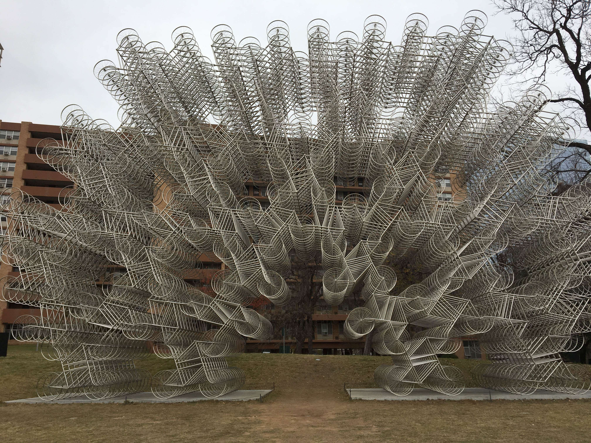
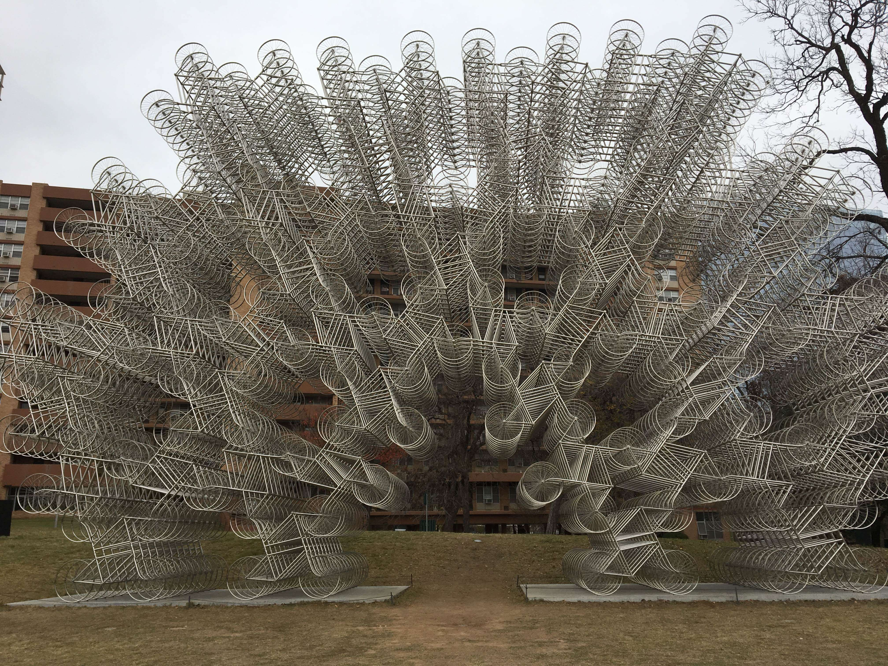
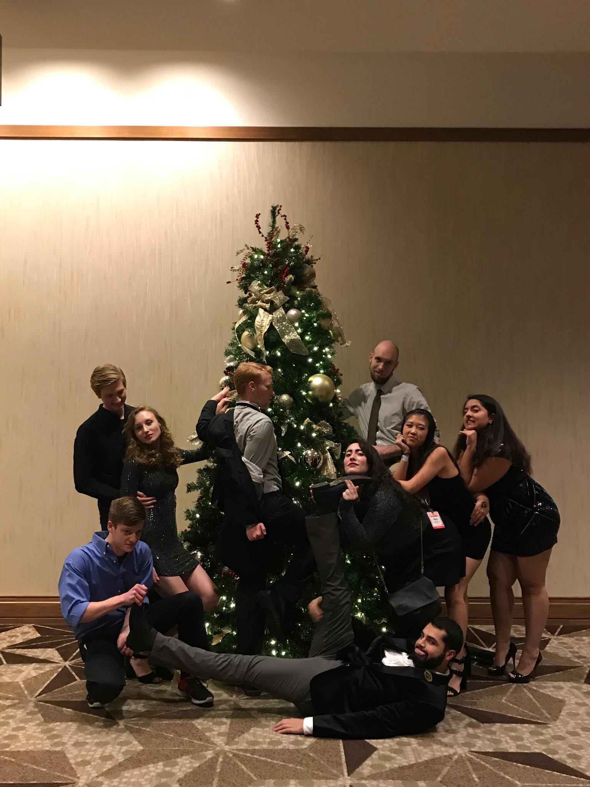
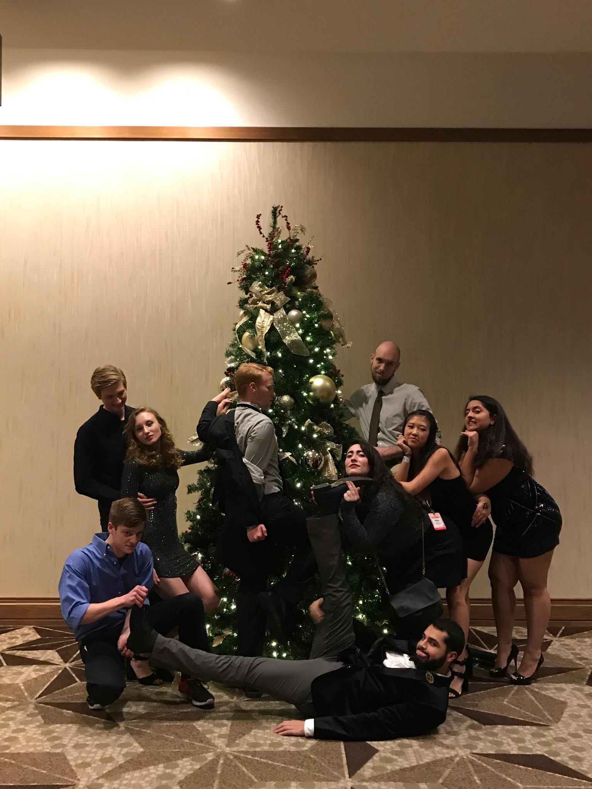
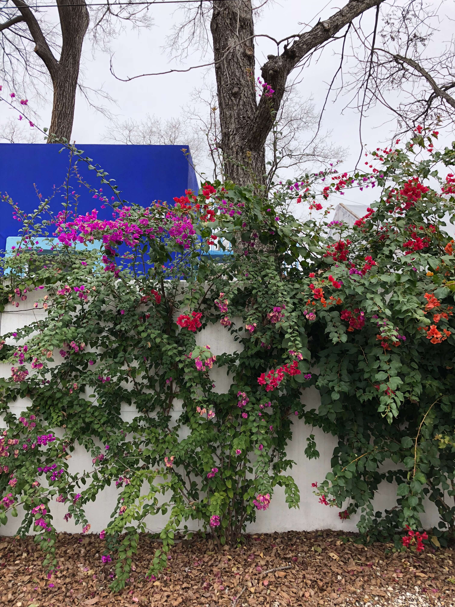
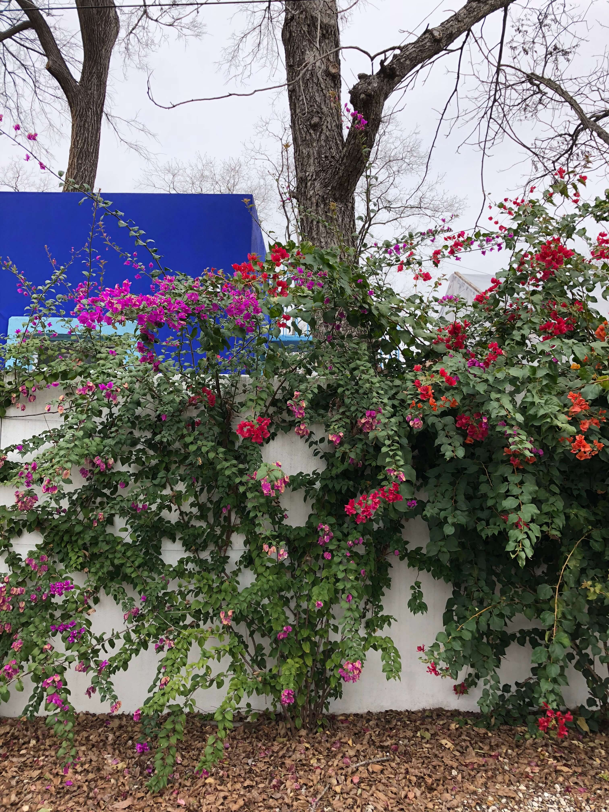

AIAS FORUM is the signature architecture + design conference for students. Taking place over four days around New Year’s Eve, FORUM is jam-packed with keynotes, sessions, tours, meetups, workshops, night events, and much, much more! What separates FORUM from other student conferences is our emphasis on interaction and discussion. With so much young and bright talent from around the world convening in one place, we want to capitalize on the opportunity to discuss the major issues that face the profession. This means that there will be opportunities for all to learn and collaborate, including the speakers and professionals who attend. FORUM 2017 will also be opening its scope to discuss issues tangentially related to architecture. As design is a collective process, we’ll be bringing many perspectives and disciplines to the table. In all, FORUM leaves attendees feeling inspired and ready to continue these discussions in their chapters, classrooms, and workplaces.


 



 



 
